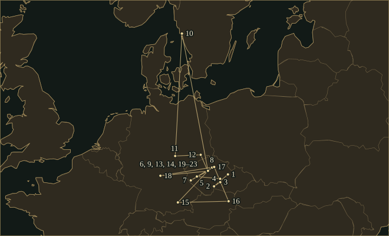
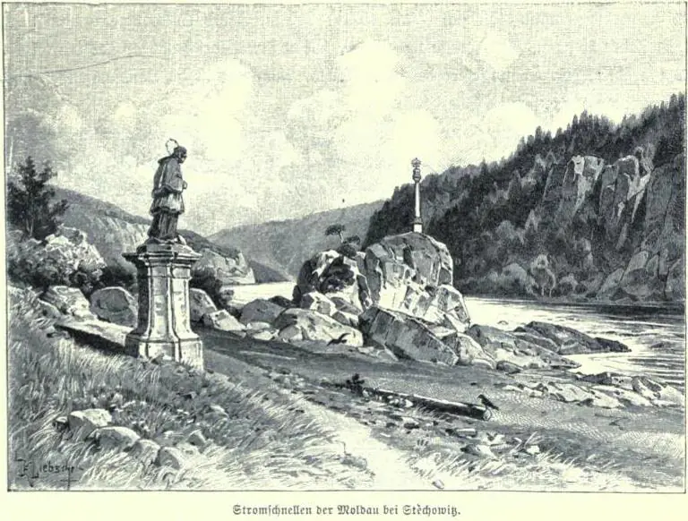
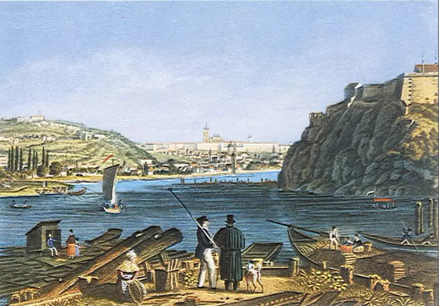
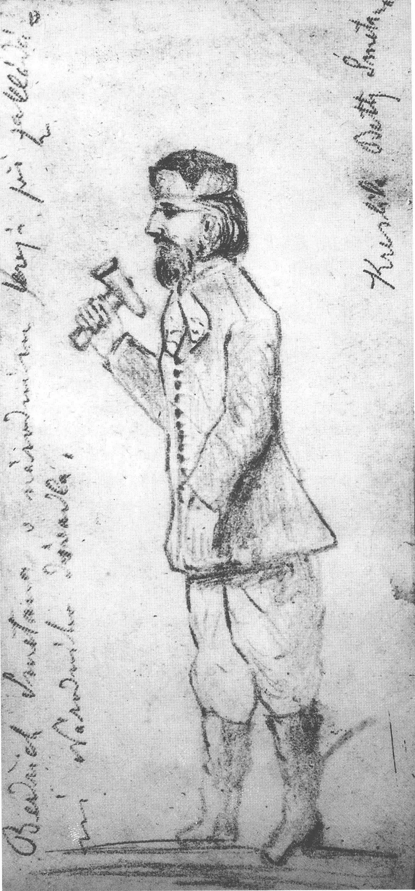

BedřichSmetana
Czech composer and conductor from Litomyšl, whose operas for Prague’s Provisional Theatre include The Bartered Bride; deaf from 1874, he then wrote Má vlast and the quartet From My Life.
- Trained
- Prague from 1843, with the blind teacher Josef Proksch; corresponded with Liszt from 1848 and visited him at Weimar in 1857
- Posts
- Music teacher to Count Thun, 1844–47 · own music institute, Prague, from 1848 · Harmoniska Sällskapet, Gothenburg, 1856–61 · opera of the Provisional Theatre, Prague, from 1866 until deafness ended his conducting in 1874
- Turning points
- Letter to Liszt 1848 · Gothenburg 1856 · The Bartered Bride 1866 · deafness 1874 · Jabkenice 1875 · Má vlast complete 1882
- Output
- Eight completed operas, the six symphonic poems of Má vlast, two string quartets, a piano trio, piano polkas and choruses
“I wanted to depict the course of my life in tones.”
Life
Bedřich Smetana was born on 2 March 1824 in the castle brewery at Litomyšl, where his father František was a master brewer. He was the first son after six daughters. At five he played first violin in a quartet on his father’s name day, and on 4 October 1830 he played the piano at an academy given for the emperor’s name day. He was schooled in German, at Jindřichův Hradec, Jihlava, Německý Brod, Prague and, from 1840, Plzeň. Because his schoolwork was suffering, his father put him there under the supervision of a cousin, Josef Franz Smetana, a gymnasium teacher.
In 1843 the cousin persuaded his father to send him to Prague to train as a musician. His parents had become poor and sent no money; the Kolář family took him in, and the blind composer Josef Proksch accepted him as a pupil. In 1844 he became music teacher to Count Leopold Thun, on the recommendation of Friedrich Kittl, director of the Conservatory, and until 1847 he spent much of each year at the Thun castles at Poběžovice and Nové Benátky.
1848–56Prague
On 28 March 1848 Smetana, then twenty-four and, as he wrote, unknown even among those closest to him, sent Liszt six piano pieces, Morceaux caractéristiques, with a dedication, which he admitted he should have asked leave to make, and a request for a loan of 400 florins to start a music school. The letter ended: “in a few weeks there might be no Smetana”. Liszt replied on 30 March that he accepted the dedication and thought the pieces among the best he had seen lately. He did not send the loan. Smetana opened his institute in Prague in 1848 on the model of Proksch’s school, and Kistner of Leipzig published the pieces on Liszt’s recommendation.
He married the pianist Katharina Kolářová in August 1849. Their eldest daughter Bedřiška died in 1855, and he wrote the Piano Trio in G minor in her memory. On the advice of the pianist Alexander Dreyschock he went to Sweden in the autumn of 1856.
1856–61Gothenburg
The Harmoniska Sällskapet of Gothenburg engaged him as conductor. Its programmes in the winter of 1857–58 included Mozart’s Requiem, Schumann’s Paradise and the Peri and choruses from Tannhäuser and Lohengrin, as he reported to Liszt, whom he had visited at Weimar in September 1857. “Consider me one of the most zealous disciples of our artistic direction,” he wrote. For Gothenburg he composed the symphonic poems Richard III (1858), Wallenstein’s Camp (1859) and Hakon Jarl (1861), which follow Liszt in taking their form from the subject.
Katharina, who had tuberculosis, died at Dresden on 19 April 1859 on the way back to Bohemia. Smetana married Barbora Ferdinandiová in July 1860 and left Gothenburg for good in May 1861, because of her homesickness and the news that a Czech theatre was to open in Prague.
1862–74The Provisional Theatre
The Czech Provisional Theatre opened on 18 November 1862. Smetana’s first opera, The Brandenburgers in Bohemia, to a libretto by Karel Sabina, was finished on 23 April 1863 and first staged on 5 January 1866. The Bartered Bride, also to a libretto by Sabina, was begun in July 1863 and finished on 15 March 1866. Smetana conducted the first performance on 30 May 1866, when the opera was in two acts with spoken dialogue. After the war of 1866 he was put in charge of the theatre’s opera.
The opera was revised several times. In 1869 the first act was divided into two scenes, and the polka that closes it and the furiant that opens the next were added soon afterwards, which made three acts. The last version, of September 1870, replaced the dialogue with recitative. At the hundredth performance, on 5 May 1882, Smetana said that he had written it “aus Trotz”, out of defiance, because critics had called him a Wagnerian who could do nothing in a lighter, popular style.
Antonín Dvořák played viola in the theatre orchestra and took part in the premieres of The Brandenburgers, The Bartered Bride and Dalibor. Dalibor, finished on 29 December 1867, was first performed on 16 May 1868, the day the foundation stone of the National Theatre was laid; critics called it Wagnerian. Smetana heard Wagner’s operas at Munich in 1868, 1870 and 1872. In October 1872 Dvořák signed an open letter in his defence. Smetana finished Libuše that November and held it back for a festive occasion.
1874–84Deafness
In 1874, after a throat infection of several weeks, Smetana noticed a whistling in his right ear; by July it returned every evening in the highest notes. In October the right ear failed, and on the morning of 20 October the left. Writing to the English musician J. Finch Thorne on 11 December 1881, he said: “I hear absolutely nothing, not even my own voice.” Hoppe and Rosanowski wrote in 2024 that syphilis is now regarded as the most likely cause, as H. Feldmann had argued from the diaries in 1964; Borík and Boríková had argued against it in 1987.
He gave up conducting. Vyšehrad was finished on 18 November 1874 and Vltava on 8 December. Vyšehrad was first played on 14 March 1875 at a Philharmonic concert under Ludvík Slánský, and Vltava on 4 April 1875 under Adolf Čech, at a concert Smetana gave to pay for consultations with specialists. The other four poems were finished by March 1879, and the whole cycle was first performed at the Žofín hall on 5 November 1882 under Čech, while Smetana was staying in Prague with his friend Josef Srb. He wrote to Čech: “It was as if I had heard one piece after another, in spirit but almost in reality.”
By the autumn of 1875 Smetana was living at Jabkenice, near Loučeň, in the house of his daughter Žofie and her husband, the forester Josef Schwarz. There he finished the String Quartet in E minor, From My Life, on 29 December 1876. The Prague chamber music society refused it for its style and technical difficulty. In a letter to Srb of 12 April 1878 Smetana listed the movements as love of music in youth with a premonition of misfortune, the dances of his youth, first love, and the discovery of national music, broken off by “that fateful whistling of the highest notes in my ear”. Dvořák played viola at a private performance in April 1878, and the first public performance was on 29 March 1879. On 5 May 1880 Liszt wrote that Smetana’s name “remains permanently established in his homeland; your works unmistakably guarantee it”, and asked for the parts of the quartet.
The National Theatre opened on 11 June 1881 with Libuše. A fire destroyed the auditorium on 12 August, and the theatre reopened on 18 November 1883 with the same opera. The Devil’s Wall was first performed on 29 October 1882. In November 1882 Smetana lost for a time the ability to speak, read and remember names. He knew nothing of the national celebration of his sixtieth birthday on 2 March 1884. On 20 April 1884 Srb took him to the asylum in Prague, where he died on 12 May. He was buried at the Vyšehrad cemetery.
Places

All 23 places, with sources
- Litomyšl · 1824-03-02 · born
Born in the castle brewery, where his father František was a master brewer. On 4 October 1830 he played the piano at an academy given in the town for the emperor’s name day. Coordinates mark the town, not the brewery.
Bedřich Smetana Museum, National Museum: Life · Bronislav Wellek, Friedrich Smetana (1895)
- Jindřichův Hradec (Neuhaus) · 1831–1836 · childhood
His father was brewer to Count Czernin at Neuhaus from 1831 to 1836, and the boy went to school there.
- Jihlava (Iglau) · 1836–1839 · studied
Schooled in German at Iglau and Deutschbrod between 1836 and 1839; Wellek does not divide the years between the two towns. Nekula gives Iglau as 1835–36 and Deutschbrod as 1836–39.
Bronislav Wellek, Friedrich Smetana (1895) · Marek Nekula, Language & History 64.2 (2021)
- Havlíčkův Brod (Deutschbrod) · 1836–1839 · studied
Schooled at Deutschbrod (now Havlíčkův Brod), in whose district his father owned a small estate from 1836. Wellek does not divide the years between Iglau and Deutschbrod; Nekula gives Deutschbrod as 1836–39.
Bronislav Wellek, Friedrich Smetana (1895) · Marek Nekula, Language & History 64.2 (2021)
- Plzeň (Pilsen) · 1840–1843 · studied
Boarded in the convict of the Premonstratensian gymnasium, under the supervision of his cousin Josef Franz Smetana; wrote piano dances and an overture in 1842.
- Prague · 1843–1845 · studied
Came to Prague to train as a musician and had about two years of lessons with the blind Josef Proksch, then continued studying alone for two more. Coordinates mark the city, not Proksch’s school.
- Poběžovice (Ronsperg) · 1844–1847 · worked
Music teacher in the household of Count Leopold Thun, who spent part of each year at Ronsperg.
- Benátky nad Jizerou (Nové Benátky) · 1844–1847 · worked (inferred)
The Thun household also spent part of each year at Neu-Benatek near Jungbunzlau; the author identifies this with Nové Benátky, now part of Benátky nad Jizerou. The coordinates mark that town.
- Prague, Old Town Square · 1848–1849 · worked
His address in March 1848 was Old Town Square 548. He opened his music institute in 1848, and the Morceaux caractéristiques were first played at the institute on the Old Town Square on 25 March 1849, at a public examination of his students. Six morceaux caractéristiques.
Bronislav Wellek, Friedrich Smetana (1895) · Bedřich Smetana Museum: catalogue of works
- Gothenburg · 1856–1861-05 · worked
Conductor of the Harmoniska Sällskapet, concert pianist and teacher; wrote Richard III, Wallenstein’s Camp and Hakon Jarl.
Bedřich Smetana Museum, National Museum: Life · Bronislav Wellek, Friedrich Smetana (1895)
- Weimar · 1857-09-03–1857-09-07 · travelled
Stayed a few days at Weimar at Liszt’s invitation, on his way to Sweden; Wellek dates the stay 3–7 September 1857. The transcription Memories of Weimar was completed there on 5 September 1857.
Bronislav Wellek, Friedrich Smetana (1895) · Bedřich Smetana Museum: Memories of Weimar
- Dresden · 1859-04-19 · travelled
His first wife Katharina died here on 19 April 1859 on the journey back to Bohemia. Coordinates mark the city.
- Prague, Provisional Theatre · 1866–1874 · worked
Principal conductor of the opera after the war of 1866 until deafness ended his conducting in 1874. Wellek places the theatre on the quay near Slavonic Island; the coordinates are the English Wikipedia record for the Provisional Theatre.
- Prague, Provisional Theatre · 1866-05-30 · premiere
First performance of The Bartered Bride under Smetana, in two acts with spoken dialogue. The Brandenburgers in Bohemia had been staged here on 5 January 1866, with Dvořák in the orchestra. The Bartered Bride.
Bedřich Smetana Museum: catalogue of works · Dvořák chronology, antonin-dvorak.cz
- Munich · 1870 · heard
Went to hear Das Rheingold and Die Walküre in the summer of 1870 and met Liszt there. Wellek also records visits for Die Meistersinger in 1868 and Tristan in 1872. The month is not given in the source.
- Vienna · 1875 · travelled
Consulted the specialist Dr Politzer in 1875 at the end of the same journey; the month is not given.
Bronislav Wellek, Friedrich Smetana (1895) · Hoppe and Rosanowski, The deafness of Bedrich Smetana (2024)
- Jabkenice · 1875–1884 · lived
Lived in the house of his daughter Žofie and her husband, the forester Josef Schwarz; wrote the string quartet From My Life, the last operas and the later poems of Má vlast here. The museum dates the residence from 1876; Smetana’s own list records a poem finished at Jabkenice on 18 October 1875. String Quartet No. 1, From My Life.
Bedřich Smetana Museum, National Museum: Life · Bedřich Smetana Museum: catalogue of works · Bronislav Wellek, Friedrich Smetana (1895)
- Würzburg · 1875-04 · travelled
Consulted the ear specialist Dr Tröltsch in April 1875; Wellek names Munich, Salzburg and Linz as the next stops.
- Prague, Žofín · 1875-04-04 · premiere
First performance of Vltava under Adolf Čech, at a concert Smetana gave to pay for consultations with specialists. Coordinates are from the Czech Wikipedia record for the Žofín palace. Má vlast: Vltava.
Bedřich Smetana Museum: catalogue of works · Bronislav Wellek, Friedrich Smetana (1895)
- Prague, National Theatre · 1881-06-11 · premiere
First performance of Libuše, at the opening of the National Theatre. A fire on 12 August 1881 destroyed the auditorium, and the reopened theatre played Libuše again on 18 November 1883. Libuše.
National Theatre, Prague: history · Bedřich Smetana Museum: catalogue of works
- Prague, Žofín · 1882-11-05 · premiere
First performance of the whole of Má vlast under Adolf Čech; Smetana was staying in Prague with Josef Srb. Má vlast.
Bedřich Smetana Museum: catalogue of works · Bronislav Wellek, Friedrich Smetana (1895)
- Vyšehrad Cemetery, Prague · 1884 · buried
Buried in the Vyšehrad cemetery, field 5, grave 40. The date of the burial is not in the sources consulted. Dvořák took part in a remembrance at the grave on 12 May 1887.
Mahler Foundation: Vyšehradský cemetery · Dvořák chronology, antonin-dvorak.cz
- Prague · 1884-05-12 · died
He was taken by Srb to the asylum in Prague on 20 April 1884 and died there on 12 May. The sources consulted do not name the street, so the coordinates mark the city.
Bronislav Wellek, Friedrich Smetana (1895) · Bedřich Smetana Museum, National Museum: Life
Influences
Teachers, encounters and borrowed music, each with its account and sources in the Web of Influence.
Influences received
The Sound
♮Programme
Wellek printed a programme for each of the six poems of Má vlast, giving the text by V. V. Zelený that Smetana approved. The programme of Vyšehrad has the bard Lumír see the fortress in its glory and then in ruins, and Wellek calls the Vyšehrad motif the main motif of the whole cycle. Vyšehrad is scored with two harps.
𝄞Vltava
The main theme of Vltava enters at bar 40, in E minor and 6/8, in the first violins and oboes, over rocking semiquavers in the lower strings marked sempre ondeggiante, “waving”. The score calls for piccolo, harp, triangle, cymbals and bass drum in addition to the usual orchestra. The programme follows the river from its two springs to the rapids at St John and on to Prague.
𝄾Dance
The polka that closes the first act of The Bartered Bride and the furiant that opens the second were added to the two-act version of 1866. Wellek says that the dance in the comedians’ scene, a skočná, was written later, for a Paris production that did not take place. Smetana wrote piano polkas from his schooldays on, and Wellek reports that he played his newest dance pieces at Písek on 4 October 1881.
𝄢Overture and leitmotif
Wellek wrote in 1895 that Smetana used leitmotifs in The Bartered Bride more fully than was usual in comic opera, and that the sale of the bride, the central event of the plot, supplies the thematic material of the overture. Smetana himself said that an overture suited a comic opera only when it was a single large allegro, as in The Bartered Bride. The overture is in F major, marked Vivacissimo, in cut time.
♩The quartet
From My Life opens with a chord marked sff for all four instruments, followed by repeated quavers in the two violins over a long note in the cello, and the viola enters in bar 4 with the first theme, marked espress. The second movement is a polka, Allegro moderato à la Polka, with a Meno vivo trio in D♭ major in which, Smetana wrote in 1878, the players said they could not get the chords in tune; he added easier alternatives in small notes for the violins and viola. In the finale the first violin holds the high E.
♯Composing after deafness
In his letter to Thorne of 1881 Smetana wrote that the roaring in his head grew louder while he composed. Hoppe and Rosanowski quote Otakar Hostinský, who saw him in May 1875, as writing that Smetana played as well as before but that “at pianissimo he sometimes didn’t realise that this or that key didn’t make a sound”. They also quote Adolf Čech on Smetana singing to his own playing: “he never sang in the same key in which he played”.
Works
A selection from the composer’s works.
- 1848Six morceaux caractéristiquesOp. 1PianoCompleted on 23 March 1848 and dedicated to Liszt, who helped to have them published. First performed at Smetana’s institute on the Old Town Square on 25 March 1849.
- 1855Piano Trio in G minorPiano, violin and celloWritten between 6 September and 22 November 1855 in memory of his daughter Bedřiška. First performed at the Konvikt, Prague, on 3 December 1855.
- 1857SketchesOp. 4PianoFour pieces dedicated to Clara Schumann and published in Prague by Veit, in 1857 according to Smetana’s own list and 1858 according to the edition record. They were revised from album leaves written between 1848 and 1852.
- 1858Richard IIIOp. 11OrchestraThe first of the symphonic poems written in Sweden, composed at Gothenburg and Särö. Performed in Prague on 5 January 1862 in the orchestral version.
- 1863The Brandenburgers in BohemiaOpera in three actsLibretto by Karel Sabina. Finished on 23 April 1863 and first performed at the Provisional Theatre on 5 January 1866.
- 1863–66The Bartered BrideJB 1:100Comic operaLibretto by Karel Sabina. First performed on 30 May 1866 in two acts with spoken dialogue; the final version dates from September 1870. The overture and three dances are played as concert pieces.
- 1865–67DaliborOpera in three actsFinished on 29 December 1867 and first performed at the New Town Theatre on 16 May 1868. Revised in 1870 and 1879.
- 1869–72LibušeFestive opera in three actsFinished on 12 November 1872 and first performed on 11 June 1881 at the opening of the National Theatre; it also reopened the theatre on 18 November 1883.
- 1873–74The Two WidowsOperaBegun on 16 July 1873 and first performed at the Provisional Theatre on 27 March 1874; revised in 1877.
- 1872–79Má vlast (My Country)JB 1:112OrchestraSix symphonic poems: Vyšehrad, Vltava, Šárka, From Bohemia’s Meadows and Groves, Tábor and Blaník. Vyšehrad was finished in 1874 and Blaník in 1879. The complete cycle was first performed on 5 November 1882.Recordings in the Hall
- 1875–76The KissOperaWritten at Jabkenice and first performed at the Provisional Theatre on 7 November 1876.
- 1876String Quartet No. 1 in E minor, “From My Life”JB 1:105String quartetFinished on 29 December 1876. Privately performed in April 1878 with Dvořák on viola, and first played in public on 29 March 1879. Smetana arranged it for piano four hands.Recordings in the Hall
- 1877–78The SecretOperaWritten at Jabkenice between 23 July 1877 and 15 July 1878 and first performed at the New Czech Theatre on 18 September 1878.
- 1879–82The Devil’s WallOperaWritten at Jabkenice and first performed at the New Czech Theatre on 29 October 1882.
- 1882–83String Quartet No. 2 in D minorString quartetBegun in June 1882 and finished on 12 March 1883. First performed at the Konvikt, Prague, on 3 January 1884.
In the Score
Short examples, engraved and playable.
Vltava — quoted, bars 39–42Main theme, violins
The Bartered Bride — quoted, opening barsThe overture, bars 1–2
String Quartet No. 1 — quoted, finale, bars 222–230Held high E, violin I
Sister Arts


The programme of Vltava that Smetana approved names the rapids at St John, where the river runs between rocks before it widens towards Prague. The statue of St John of Nepomuk stands at the left of the picture. The rapids have lain under water since the dams of the 1940s and 1950s were built.


Morstadt painted the Vltava below the rock of Vyšehrad, with rafts and timber on the bank and Prague Castle in the distance. Vyšehrad opens Má vlast, and the programme of Vltava ends with the river reaching Prague under the old fortress. Smetana wrote both poems in 1874.


Smetana’s second wife drew him at the ceremony of 16 May 1868, the day Dalibor was first performed. The theatre opened on 11 June 1881 with Libuše, burnt down on 12 August, and reopened on 18 November 1883 with the same opera.
Recommended recordings
- VltavaCzech Philharmonic, Karel AnčerlSupraphon · 1968A concert performance given on 12 May 1968 in the Smetana Hall of the Municipal House, Prague, at the Prague Spring festival, as part of a performance of the whole cycle. Supraphon publishes the video.
- The Bartered Bride — overtureCzech Philharmonic, Jiří BělohlávekCzech Philharmonic · 2013From the orchestra’s New Year’s Concert of 1 January 2013 in the Rudolfinum, Prague, published on the orchestra’s own channel.
- String Quartet No. 1, “From My Life”Takács QuartetHyperion, CDA67997 · 2014Recorded at the Wyastone Concert Hall, Monmouth, in August 2014, with Janáček’s two string quartets on the same disc. Hyperion lists the disc among Gramophone’s Critic’s Choice selections for 2015.
- Czech DancesGarrick Ohlsson, pianoHyperion, CDA68062 · 2015Both sets of Czech Dances and On the Seashore, recorded in January 2015 at Henry Wood Hall, London.
Where to hear more
- Má vlast: Vltava1874Czech Philharmonic; Karel Ančerl · Supraphon · 12 May 1968, Smetana Hall, Municipal House, Prague (Prague Spring concert)
Ančerl conducted the whole cycle at the Prague Spring festival of 1968; Supraphon’s own channel carries the Vltava section as a video. The film credits Bohumil Čipera as recording director.
- The Bartered Bride: overture1866Czech Philharmonic; Jiří Bělohlávek · Czech Philharmonic · 1 January 2013, Rudolfinum, Prague (New Year’s Concert)
A concert video from the orchestra’s own channel, with audio supplied by Czech Radio.
- String Quartet No. 1 in E minor, “From My Life”1876Takács Quartet · Hyperion, CDA67997 · August 2014, Concert Hall, Wyastone Estate, Monmouth
Hyperion’s track page prints Smetana’s letter on the programme of the quartet with a booklet note by Gavin Plumley. The disc also holds Janáček’s two string quartets.
- Czech Dances; On the Seashore1861–79Garrick Ohlsson, piano · Hyperion, CDA68062 · January 2015, Henry Wood Hall, London
Smetana’s two sets of Czech Dances for piano, with the piano piece On the Seashore, on one disc.
These recordings are under copyright, so the Hall cannot play them; the links go to the labels’ and artists’ own uploads and to streaming services.
Lineage
The blind Josef Proksch taught him counterpoint and composition in Prague. Liszt accepted the dedication of the Morceaux caractéristiques in 1848, helped to have them published, and in 1880 asked for the parts of the quartet. Smetana heard Wagner’s music dramas in Munich in 1868, 1870 and 1872. Wellek wrote in 1895 that Mozart’s Figaro was the nearest model for The Bartered Bride and, by Smetana’s own account, his ideal at the time; see Mozart. Dvořák played viola under him at the premieres of 1866 and 1868 and at the first performance of the quartet. Zdeněk Fibich followed him at the conductor’s desk of the Provisional Theatre in 1875, and Adolf Čech conducted the first performances of Vltava and of the whole of Má vlast.
Further reading
- Bronislav Wellek, Friedrich Smetana (Prague: H. Dominicus [Th. Grüss], 1895; reprinted from Österreichisch-Ungarische Revue, vol. 17).early biography and letters
The book prints what Smetana said about his own works and how they were described in the 1890s, including his letters to Liszt, the programmes of Má vlast and his account of the string quartet. It is in German and in Fraktur.
- Bedřich Smetana Museum, National Museum, Prague, Bedřich Smetana: life and catalogue of works.catalogue
For each work the entries give the dates on which it was begun, finished and first performed, with places, performers and editions, and Smetana’s own list of 1875.
- Ulrich Hoppe and Frank Rosanowski, “The deafness of Bedrich Smetana”, GMS Zeitschrift für Audiologie 6 (2024), Doc02, doi:10.3205/zaud000037.article
On the onset and cause of the hearing loss. The article follows Smetana’s diary and letters and sets out the case for syphilis and the arguments against it.
- František Bartoš (ed.), Bedřich Smetana: Letters and Reminiscences (Prague: Artia, 1955).letters
For what Smetana and his friends wrote at the time, the Internet Archive holds a lending copy. Hoppe and Rosanowski cite the German edition of 1954, *Smetana in Briefen und Erinnerungen*, for Smetana’s diary and for the accounts of Hostinský and Čech.
- Brian Large, Smetana (New York: Praeger, 1970).biography
A full-length English biography; the Internet Archive record lists its bibliography at pages 460–461.
- John Clapham, Smetana (London: Dent; New York: Octagon Books, 1972).biography
A shorter English biography, 161 pages with a bibliography at pages 147–149; the Internet Archive holds a lending copy of the Dent volume.
- Marek Nekula, “Language loyalty and language shift in Bohemia in the long 19th century based on the language biography of Friedrich (Bedřich) Smetana”, Language & History 64.2 (2021), 92–112, doi:10.1080/17597536.2021.1898126.article
On the languages Smetana used in his letters and diaries, with the dates of his change from German to Czech and from Friedrich to Bedřich.
Cite this page
Contrapunctus. “Bedřich Smetana.” Accessed 20 October 2026. https://mottopanikeiku.github.io/contrapunctus/composers/smetana.html.
@misc{contrapunctus-composers-smetana,
author = {{Contrapunctus}},
title = {Bedřich Smetana},
howpublished = {\url{https://mottopanikeiku.github.io/contrapunctus/composers/smetana.html}},
note = {Accessed 2026-10-20}
}